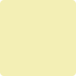

Oakland As 5 - Boston Red Sox 3
May 01, 2012
|
| 1 | 2 | 3 | 4 | 5 | 6 | 7 | 8 | 9 | |
| 1
Weeks
#19 2B
| 
2-1
7
| 2-3
| | 
0-1
8
2
RBI
| | 2-2
5-3
| | | 2-2
3
|
| 2
Inge
#18 3B
| 0-3
| | 2-0
9
| 3-2
9
| | | 1-2
4
| | 
1-2
6-3
|
| 3
Reddick
#16 RF
| 
4-1
| | 2-3
| | 2-3
| | 2-0
7
| | 2-3
|
| 4
Cespedes
#52 CF
| 3-1
8
1
RBI
| | 0-2
4
| | 3-2
4
| | 0-3
| | |
| 5
Gomes, J
#31 LF
| 1-3
| | | 3-3
| 1-0
1-3
| | 0-3
| | |
| 6
Suzuki, K
#8 C
| 3-3
| | | 0-1
6
| | 1-2
5-3
| | 2-0
8
| |
| 7
Ka'aihue
#25 1B
| | 0-2
9
| | 4-1
| | 3-1
9
| | 1-3
| |
| 8
Recker
#26 DH
| | 1-3
| | 3-3
| | 1-2
7
| | 2-3
| |
| 9
Pennington
#2 SS
| | 3-2
7
| | 0-1
8
1
RBI
| | 2-2
7
| | | 0-0
9
Pitching
|
| W-L | ERA | IP | AB | K | BB | H | R | ER | |
Parker, J | 1-0 | 1.38 | 6.2 | 27 | 4 | 2 | 4 | 1 | 1 | |
Fuentes | 1-0 | 4.00 | 0.1 | 1 | 0 | 0 | 0 | 0 | 0 | |
Cook, R | 0-0 | 0.00 | 1.0 | 4 | 2 | 1 | 0 | 0 | 0 | |
Balfour | 0-1 | 4.72 | 0.1 | 5 | 1 | 1 | 3 | 2 | 2 | |
Norberto | 0-0 | 4.91 | 0.2 | 2 | 1 | 0 | 0 | 0 | 0 |